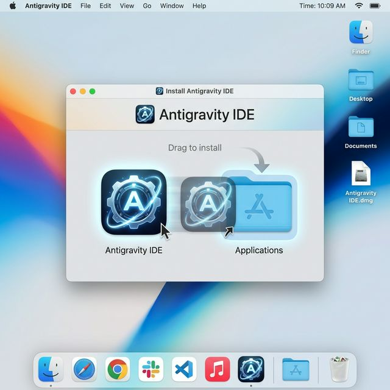

Встановлення Antigravity не відрізняється від більшості програм для macOS, але є кілька деталей, які варто знати, щоб почати роботу максимально швидко.
Крок 1: Завантаження інсталятора
Перш за все, перейдіть на офіційний сайт antigravity.google. Сайт автоматично визначить вашу систему і запропонує потрібну версію.
- Apple Silicon: для нових Mac з процесорами M1, M2, M3.
- Intel: для старіших моделей MacBook чи iMac.
Крок 2: Встановлення програми
Після завершення завантаження відкрийте файл .dmg подвійним кліком. Ви побачите вікно встановлення.

Просто перетягніть логотип Antigravity у синю папку Applications. Зачекайте кілька секунд, поки завершиться копіювання.
Крок 3: Перший запуск та налаштування
- Відкрийте папку Програми (Applications) та знайдіть Antigravity.
- Якщо з'явиться вікно з попередженням про «програму з інтернету», натисніть Відкрити (Open).
- Увійдіть за допомогою свого Google акаунту для синхронізації налаштувань.
- Виберіть свою улюблену тему оформлення та спосіб роботи ШІ-агента.
Порада: Під час першого запуску Antigravity запропонує вам імпортувати налаштування, розширення та гарячі клавіші з VS Code або Cursor. Це дуже зручно, якщо ви раніше користувались іншими редакторами.
Вітаємо! Тепер ви готові створювати майбутнє разом з найпотужнішим AI-агентом на вашому Mac.